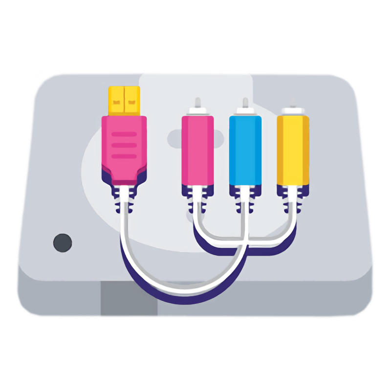
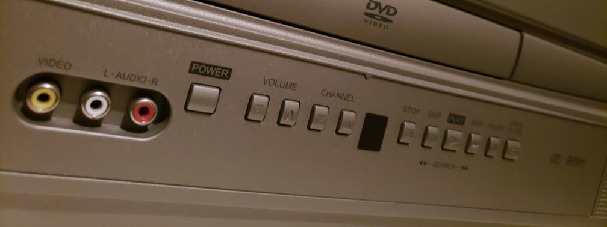
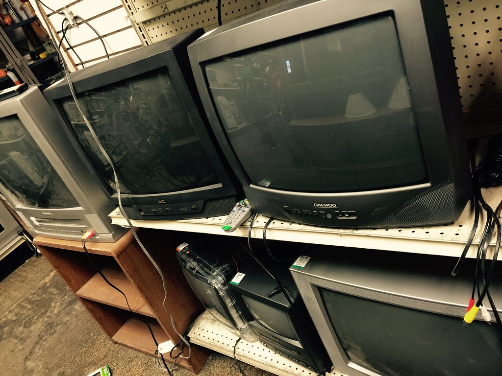
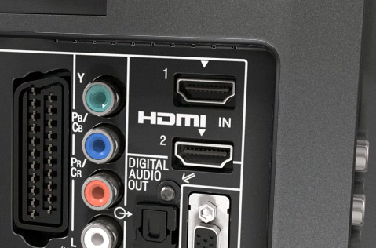
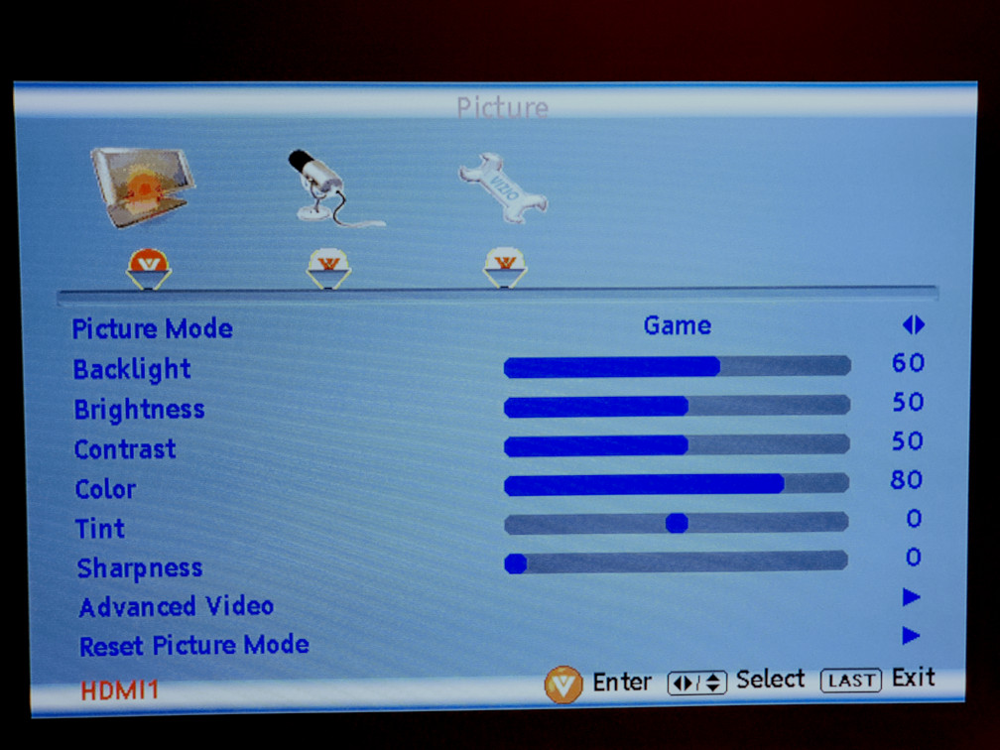

DisplayStation
TV Connections
Understanding what video types your TV supports.
Television Technology has changed greatly in just the past 20 years. Back when most retro consoles were sold the most common kind of display was the Cathode Ray Tube which was big, heavy, and potentially dangerous should something go wrong. Even though they were very blurry and didn't use pixels as we are familiar with them, they had one big advantage. CRT displays had very little latency and it was easy to display images and video on them which allowed for a lot of flexible, inexpensive video solutions as the technology got better. Developers had to design their games to be playable on these imprecise devices, and often times visual quality was compromised depending on each device's quirks.
Cathode Ray Tube (CRT)
These are TVs that employed CRT technology to draw an image on a phosphor screen. Televisions using this technology accept anologue video signals and render them on the screen with minimal lag due to minimal image processing. This was sometimes used by game developers to make their games harder, utlizing the low input latency to increase difficulty in timing.
In the early 2000s a new type of display was created, the LCD. These were much smaller, had a more consistent quality, and didn't produce nearly as many visual artifacts. These, along with LED displays, would replace the CRT as the standard, but that came with some drawbacks. Most LCD/LED displays now are digital, and while there were analogue LCD displays made, they were very expensive and rare.
In order to stay backwards compatible, many modern TVs still contain legacy video inputs. Depending on the brand and price, your TV may or may not have one all of the available connections. Most TVs will have at least one composite video input. If you can find a TV that has component in and even S-Video in, you will have many more options to improve the video quality of your old games.
TV Inputs
TVs are made to accept all kinds of inputs unless the are old or cheap. They are generally color coded, so just match the colors. The TV pictured here has a SCART connector, featured on the far left.
Connecting the cables is simple, just plug the colored cables into the corresponding holes. Be careful, as composite and component cables share the same sized inputs, so you can accidently plug a composite cable into a component input, or vice versa. This will not usually cause any damage, other than having the picture look wierd or not showing up at all. Otherwise, S-Video is made to fit only one way, and Scart has such a unique shape that it is impossible to insert it incorrectly.
Once you have everything plugged in and you change the TV to the proper channel/input you can beginning playing the game. Pay attention to the colors on screen and how long it takes for you to notice your inputs. You made need to open your TV's settings and change a couple settings. Modern TVs like to "enhance" the image for better viewing, but this can add up to 3-6 frames of delay between what the console shows and when you actually see it. There is a simple fix, fortunately.
If you have a modern flat screen TV, try searching for a "game mode". That will usually disable a lot of features to reduce the latency between frames. Lowering or disabling sharpness and color enhancements can also help improve latency.
TV Settings
Spend a bit of time looking through your settings and see if changing anything makes the picture quality improve. Everyone's preferences are different, but you may find that less sharpness looks better, or that increasing the saturation helps make colors render better. Also, be prepared to change the brigtness and contrast settings between games, since many developers didn't have a standard, instead they would include a screen in the game settings to help you adjust your TV appropriate to the game!